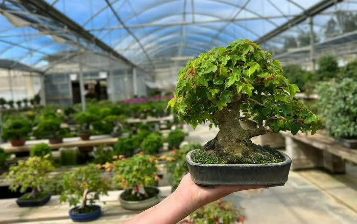
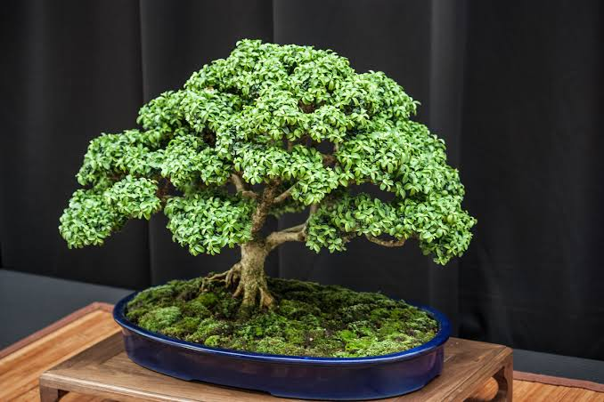

Es un tipo de arte con las plantas ahcerlo que sea pequeños esto inicia en los luagres asiaticos, don
SU PRECIO REAL


Es un tipo de arte con las plantas ahcerlo que sea pequeños esto inicia en los luagres asiaticos, don
